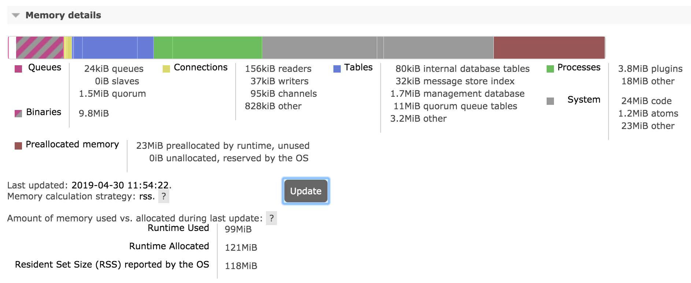
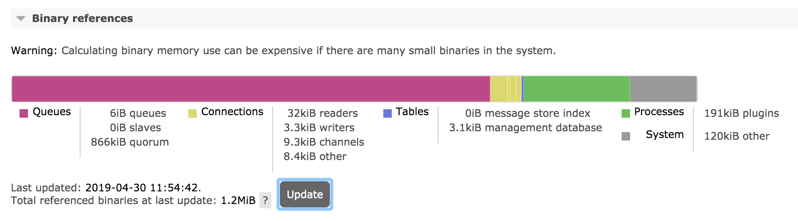

Reasoning About Memory Use
Overview
Operators need to be able to reason about node's memory use, both absolute and relative ("what uses most memory"). This is an important aspect of system monitoring.
RabbitMQ provides tools that report and help analyse node memory use:
- rabbitmq-diagnostics memory_breakdown
- rabbitmq-diagnostics status includes the above breakdown as a section
- Prometheus and Grafana-based monitoring makes it possible to observe memory breakdown over time
- Management UI provides the same breakdown on the node page as rabbitmq-diagnostics status
- HTTP API provides the same information as the management UI, useful for monitoring
- rabbitmq-top and rabbitmq-diagnostics observer provide a more fine-grained top-like per Erlang process view
Obtaining a node memory breakdown should be the first step when reasoning about node memory use.
Note that all measurements are somewhat approximate, based on values returned by the underlying runtime or the kernel at a specific point in time, usually within a 5 seconds time window.
Total Memory Use Calculation Strategies
RabbitMQ can use different strategies to compute how much memory a node uses. Historically, nodes obtained this information from the runtime, reporting how much memory is used (not just allocated). This strategy, known as legacy (alias for erlang) tends to underreport and is not recommended.
Effective strategy is configured using the vm_memory_calculation_strategy key. There are two primary options:
-
rss uses OS-specific means of querying the kernel to find RSS (Resident Set Size) value of the node OS process. This strategy is most precise and used by default on Linux, MacOS, BSD and Solaris systems. When this strategy is used, RabbitMQ runs short lived subprocesses once a second.
-
allocated is a strategy that queries runtime memory allocator information. It is usually quite close to the values reported by the rss strategy. This strategy is used by default on Windows.
The vm_memory_calculation_strategy setting also impacts memory breakdown reporting. If set to legacy (erlang) or allocated, some memory breakdown fields will not be reported. This is covered in more detail further in this guide.
The following configuration example uses the rss strategy:
vm_memory_calculation_strategy = rss
Similarly, for the allocated strategy, use:
vm_memory_calculation_strategy = allocated
To find out what strategy a node uses, see its effective configuration.
Memory Use Breakdown
A RabbitMQ node can report its memory usage breakdown. The breakdown is provided as a list of categories (shown below) and the memory footprint of that category.
Each category is a sum of runtime-reported memory footprint of every process or table of that kind. This means that the connections category is the sum of memory used by all connection processes, the channels category is the sum of memory used by all channel processes, ETS tables is the sum of memory used of all in-memory tables on the node, and so on.
How Memory Breakdown Works
Memory use breakdown reports allocated memory distribution on the target node, by category:
- Connections (further split into four categories: readers, writers, channels, other)
- Quorum queue replicas
- Classic queue master replicas
- Classic queue mirror replicas
- Message Store and Indices
- Binary heap references
- Node-local metrics (stats database)
- Internal database tables
- Plugins
- Memory allocated but not yet used
- Code (bytecode, module metadata)
- ETS (in memory key/value store) tables
- Atom tables
- Other
Generally there is no overlap between the categories (no double accounting for the same memory). Plugins and runtime versions may affect this.
Producing Memory Use Breakdown Using CLI Tools
A common way of producing memory breakdown is via rabbitmq-diagnostics memory_breakdown.
quorum_queue_procs: 0.4181 gb (28.8%) binary: 0.4129 gb (28.44%) allocated_unused: 0.1959 gb (13.49%) connection_other: 0.1894 gb (13.05%) plugins: 0.0373 gb (2.57%) other_proc: 0.0325 gb (2.24%) code: 0.0305 gb (2.1%) quorum_ets: 0.0303 gb (2.09%) connection_readers: 0.0222 gb (1.53%) other_system: 0.0209 gb (1.44%) connection_channels: 0.017 gb (1.17%) mgmt_db: 0.017 gb (1.17%) metrics: 0.0109 gb (0.75%) other_ets: 0.0073 gb (0.5%) connection_writers: 0.007 gb (0.48%) atom: 0.0015 gb (0.11%) mnesia: 0.0006 gb (0.04%) msg_index: 0.0002 gb (0.01%) queue_procs: 0.0002 gb (0.01%) queue_slave_procs: 0.0 gb (0.0%) reserved_unallocated: 0.0 gb (0.0%)
| Report Field | Category | Details |
| total | Total amount as reported by the effective memory calculation strategy (see above) | |
| connection_readers | Connections | Processes responsible for connection parser and most of connection state. Most of their memory attributes to TCP buffers. The more client connections a node has, the more memory will be used by this category. See Networking guide for more information. |
| connection_writers | Connections | Processes responsible for serialisation of outgoing protocol frames and writing to client connection sockets. The more client connections a node has, the more memory will be used by this category. See Networking guide for more information. |
| connection_channels | Channels | The more channels client connections use, the more memory will be used by this category. |
| connection_other | Connections | Other memory related to client connections |
| quorum_queue_procs | Queues | Quorum queue processes, both currently elected leaders and followers. Memory footprint can be capped on a per-queue basis. See the Quorum Queues guide for more information. |
| queue_procs | Queues | Classic queue masters, indices and messages kept in memory. The greater the number of messages enqueued, the more memory will generally be attributed to this section. However, this greatly depends on queue properties and whether messages were published as transient. See Memory, Queues, and Lazy Queues guides for more information. |
| queue_slave_procs | Queues | Classic queue mirrors, indices and messages kept in memory. Reducing the number of mirrors (replicas) or not mirroring queues with inherently transient data can reduce the amount of RAM used by mirrors. The greater the number of messages enqueued, the more memory will generally be attributed to this section. However, this greatly depends on queue properties and whether messages were published as transient. See Memory, Queues, Mirroring, and Lazy Queues guides for more information. |
| metrics | Stats DB | Node-local metrics. The more connections, channels, queues are node hosts, the more stats there are to collect and keep. See management plugin guide for more information. |
| stats_db | Stats DB | Aggregated and pre-computed metrics, inter-node HTTP API request cache and everything else related to the stats DB. See management plugin guide for more information. |
| binaries | Binaries | Runtime binary heap. Most of this section is usually message bodies and properties (metadata). |
| plugins | Plugins | Plugins such as Shovel, Federation, or protocol implementations such as STOMP can accumulate messages in memory. |
| allocated_unused | Preallocated Memory | Allocated by the runtime but not yet used. |
| reserved_unallocated | Preallocated Memory | Allocated/reserved by the kernel but not the runtime |
| mnesia | Internal Database | Virtual hosts, users, permissions, queue metadata and state, exchanges, bindings, runtime parameters and so on. |
| quorum_ets | Internal Database | Raft implementation's WAL and other memory tables. Most of these are periodically moved to disk. |
| other_ets | Internal Database | Some plugins can use ETS tables to store their state |
| code | Code | Bytecode and module metadata. This should only consume double digit % of memory on blank/empty nodes. |
| other | Other | All other processes that RabbitMQ cannot categorise |
Producing Memory Use Breakdown Using Management UI
Management UI can be used to produce a memory breakdown chart. This information is available on the node metrics page that can be accessed from Overview:

On the node metrics page, scroll down to the memory breakdown buttons:

Memory and binary heap breakdowns can be expensive to calculate and are produced on demand when the Update button is pressed:

It is also possible to display a breakdown of binary heap use by various things in the system (e.g. connections, queues):

Producing Memory Use Breakdown Using HTTP API and curl
It is possible to produce memory use breakdown over HTTP API by issuing a GET request to the /api/nodes/{node}/memory endpoint.
curl -s -u guest:guest http://127.0.0.1:15672/api/nodes/rabbit@mercurio/memory | python -m json.tool
{
"memory": {
"atom": 1041593,
"binary": 5133776,
"code": 25299059,
"connection_channels": 1823320,
"connection_other": 150168,
"connection_readers": 83760,
"connection_writers": 113112,
"metrics": 217816,
"mgmt_db": 266560,
"mnesia": 93344,
"msg_index": 48880,
"other_ets": 2294184,
"other_proc": 27131728,
"other_system": 21496756,
"plugins": 3103424,
"queue_procs": 2957624,
"queue_slave_procs": 0,
"total": 89870336
}
}
It is also possible to retrieve a relative breakdown using the GET request to the /api/nodes/{node}/memory endpoint. Note that reported relative values are rounded to integers. This endpoint is intended to be used for relative comparison (identifying top contributing categories), not precise calculations.
curl -s -u guest:guest http://127.0.0.1:15672/api/nodes/rabbit@mercurio/memory/relative | python -m json.tool
{
"memory": {
"allocated_unused": 32,
"atom": 1,
"binary": 5,
"code": 22,
"connection_channels": 2,
"connection_other": 1,
"connection_readers": 1,
"connection_writers": 1,
"metrics": 1,
"mgmt_db": 1,
"mnesia": 1,
"msg_index": 1,
"other_ets": 2,
"other_proc": 21,
"other_system": 19,
"plugins": 3,
"queue_procs": 4,
"queue_slave_procs": 0,
"reserved_unallocated": 0,
"total": 100
}
}
Memory Breakdown Categories
Connections
This includes memory used by client connections (including Shovels and Federation links) and channels, and outgoing ones (Shovels and Federation upstream links). Most of the memory is usually used by TCP buffers, which on Linux autotune to about 100 kB in size by default. TCP buffer size can be reduced at the cost of a proportional decrease in connection throughput. See the Networking guide for details.
Channels also consume RAM. By optimising how many channels applications use, that amount can be decreased. It is possible to cap the max number of channels on a connection using the channel_max configuration setting:
channel_max = 16
Note that some libraries and tools that build on top of RabbitMQ clients may implicitly require a certain number of channels. Finding an optimal value is usually a matter of trial and error.
Queues and Messages
Memory used by queues, queue indices, queue state. Messages enqueued will in part contribute to this category.
Queues will swap their contents out to disc when under memory pressure. The exact behavior of this depends on queue properties, whether clients publish messages as persistent or transient, and persistence configuration of the node.
Message bodies do not show up here but in Binaries.
Message Store Indexes
By default message store uses an in-memory index of all messages, including those paged out to disc. Plugins allow for replacing it with disk-based implementations.
Plugins
Memory used by plugins (apart from the Erlang client which is counted under Connections, and the management database which is counted separately). This category will include some per-connection memory here for protocol plugins such as STOMP and MQTT as well as messages enqueued by plugins such as Shovel and Federation.
Preallocated Memory
Memory preallocated by the runtime (VM allocators) but not yet used. This is covered in more detail below.
Internal Database
Internal database (Mnesia) tables keep an in-memory copy of all its data (even on disc nodes). Typically this will only be large when there are a large number of queues, exchanges, bindings, users or virtual hosts. Plugins can store data in the same database as well.
Management (Stats) Database
The stats database (if the management plugin is enabled). In a cluster, most stats are stored locally on the node. Cross-node requests needed to aggregate stats in a cluster can be cached. The cached data will be reported in this category.
Binaries
Memory used by shared binary data in the runtime. Most of this memory is message bodies and metadata.
With some workloads binary data heap can be garbage collected infrequently. rabbitmqctl force_gc can be used force collection. The following couple of commands forces collection and reports top processes that released most binary heap references:
rabbitmqctl eval 'recon:bin_leak(10).' rabbitmqctl force_gc
With RabbitMQ versions that do not provide rabbitmqctl force_gc, use
rabbitmqctl eval 'recon:bin_leak(10).' rabbitmqctl eval '[garbage_collect(P) || P <- processes()].'
Other ETS tables
Other in-memory tables besides those belonging to the stats database and internal database tables.
Code
Memory used by code (bytecode, module metadata). This section is usually fairly constant and relatively small (unless the node is entirely blank and stores no data).
Atoms
Memory used by atoms. Should be fairly constant.
Per-process Analysis with rabbitmq-top
rabbitmq-top is a plugin that helps identify runtime processes ("lightweight threads") that consume most memory or scheduler (CPU) time.
The plugin ships with RabbitMQ. Enable it with
[sudo] rabbitmq-plugins enable rabbitmq_top
The plugin adds new administrative tabs to the management UI. One tab displays top processes by one of the metrics:
- Memory used
- Reductions (unit of scheduler/CPU consumption)
- Erlang mailbox length
- For gen_server2 processes, internal operation buffer length

Second tab displays ETS (internal key/value store) tables. The tables can be sorted by the amount of memory used or number of rows:

Preallocated Memory
Erlang memory breakdown reports only memory is currently being used, and not the memory that has been allocated for later use or reserved by the operating system. OS tools like ps can report more memory used than the runtime.
This memory consists of allocated but not used, as well as unallocated but reserved by the OS. Both values depend on the OS and Erlang VM allocator settings and can fluctuate significantly.
How the value in both sections is computed depend on the vm_memory_calculation_strategy setting. If the strategy is set to erlang, unused memory will not be reported. If memory calculation strategy is set to allocated, memory reserved by OS will not be reported. Therefore rss is the strategy that provides most information from both the kernel and the runtime.
When a node reports a large amount of allocated but unused memory on a long running node, it may be an indicator of runtime memory fragmentation. A different set of allocator settings can reduce fragmentation and increase the percentage of efficiently used memory. The right set of settings depends on the workload and message payload size distribution.
Runtime's memory allocator behavior can be tuned, please refer to erl and erts_alloc documentation.
Memory Use Monitoring
It is recommended that production systems monitor memory usage of all cluster nodes, ideally with a breakdown, together with infrastructure-level metrics. By correlating breakdown categories with other metrics, e.g. the number of concurrent connections or enqueued messages, it becomes possible to detect problems that stem from an application-specific behavior (e.g. connection leaks or ever growing queues without consumers).
Queue Memory
How much memory does a message use?
A message has multiple parts that use up memory:
- Payload: >= 1 byte, variable size, typically few hundred bytes to a few hundred kilobytes
- Protocol attributes: >= 0 bytes, variable size, contains headers, priority, timestamp, reply to, etc.
- RabbitMQ metadata: >= 720 bytes, variable size, contains exchange, routing keys, message properties, persistence, redelivery status, etc.
- RabbitMQ message ordering structure: 16 bytes
Messages with a 1KB payload will use up 2KB of memory once attributes and metadata is factored in.
Some messages can be stored on disk, but still have their metadata kept in memory.
How much memory does a queue use?
A message has multiple parts that use up memory. Every queue is backed by an Erlang process. If a queue is mirrored, each mirror is a separate Erlang process.
Since a queue's master is a single Erlang process, message ordering can be guaranteed. Multiple queues means multiple Erlang processes which get an even amount of CPU time. This ensures that no queue can block other queues.
The memory use of a single queue can be obtained via the HTTP API:
curl -s -u guest:guest http://127.0.0.1:15672/api/queues/%2f/queue-name |
python -m json.tool
{
..
"memory": 97921904,
...
"message_bytes_ram": 2153429941,
...
}
- memory: memory used by the queue process, accounts for message metadata (at least 720 bytes per message), does not account for message payloads over 64 bytes
- message_bytes_ram: memory used by the message payloads, regardless of the size
If messages are small, message metadata can use more memory than the message payload. 10,000 messages with 1 byte of payload will use 10KB of message_bytes_ram (payload) & 7MB of memory (metadata).
If message payloads are large, they will not be reflected in the queue process memory. 10,000 messages with 100 KB of payload will use 976MB of message_bytes_ram (payload) & 7MB of memory (metadata).
Why does the queue memory grow and shrink when publishing/consuming?
Erlang uses generational garbage collection for each Erlang process. Garbage collection is done per queue, independently of all other Erlang processes.
When garbage collection runs, it will copy used process memory before deallocating unused memory. This can lead to the queue process using up to twice as much memory during garbage collection, as shown here (queue contains a lot of messages):

Is queue memory growth during garbage collection a concern?
If Erlang VM tries to allocate more memory than is available, the VM itself will either crash or be killed by the OOM killer. When the Erlang VM crashes, RabbitMQ will lose all non-persistent data.
High memory watermark blocks publishers and prevents new messages from being enqueued. Since garbage collection can double the memory used by a queue, it is unsafe to set the high memory watermark above 0.5. The default high memory watermark is set to 0.4 since this is safer as not all memory is used by queues. This is entirely workload specific, which differs across RabbitMQ deployments.
We recommend many queues so that memory allocation / garbage collection is spread across many Erlang processes.
If the messages in a queue take up a lot of memory, we recommend lazy queues so that they are stored on disk as soon as possible and not kept in memory longer than is necessary.
Getting Help and Providing Feedback
If you have questions about the contents of this guide or any other topic related to RabbitMQ, don't hesitate to ask them on the RabbitMQ mailing list.
Help Us Improve the Docs <3
If you'd like to contribute an improvement to the site, its source is available on GitHub. Simply fork the repository and submit a pull request. Thank you!
Copyright © 2007-2020 VMware, Inc. or its affiliates. All rights reserved.
Terms of Use,
Privacy and
Trademark Guidelines